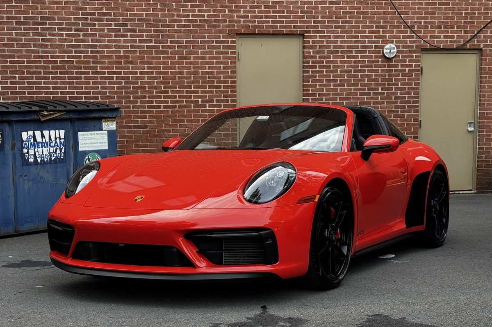
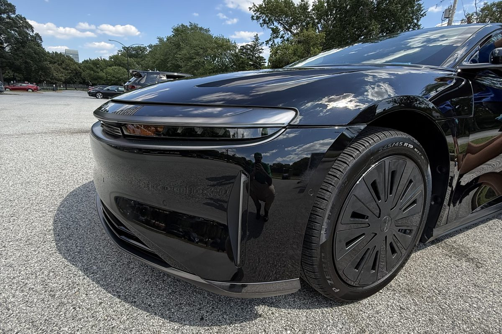
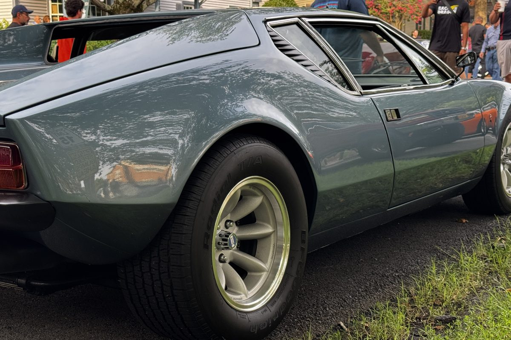
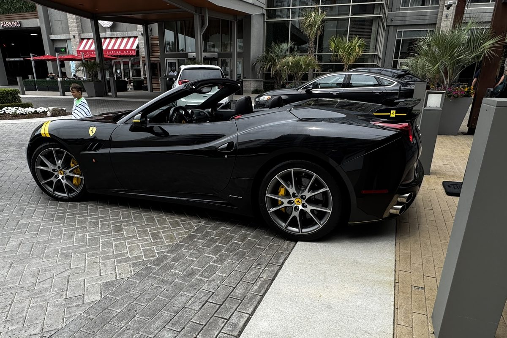
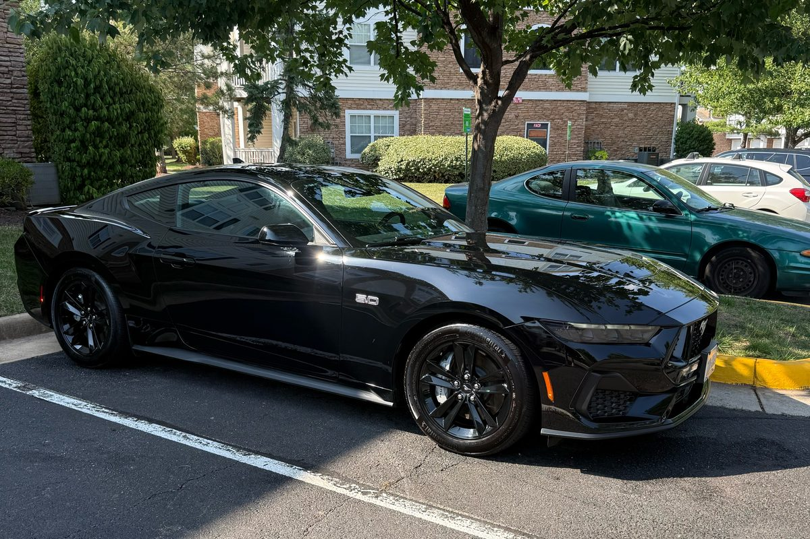
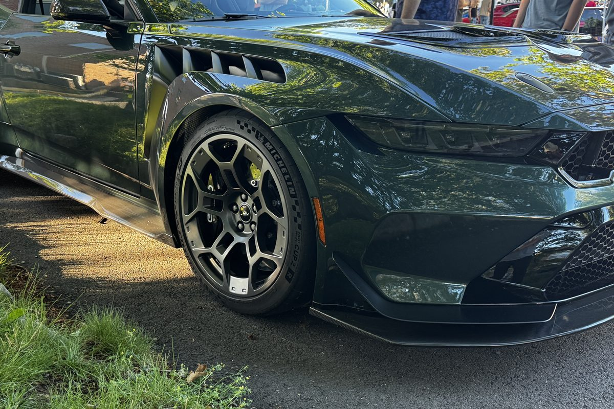

Daily Drivers
Keep your commuter looking sharp through pollen season, parking lots, and winter road treatment.
Veteran-owned ceramic coating in Leesburg, VA
Multi-year paint protection with deeper gloss than wax — and washes that take less time. Leesburg Ceramic Coating serves drivers across Leesburg and Loudoun County with professional prep and ceramic application. We work mostly mobile and come to you, and we plan cure conditions around weather and garage access.
Mostly mobile — we come to you · Free quotes after a paint check
Daily drivers, new cars, leases, and weekend cars across Leesburg and nearby Loudoun County.
Keep your commuter looking sharp through pollen season, parking lots, and winter road treatment.
Lock in factory paint early — fewer swirls, easier handovers, and lasting gloss.
Show-ready depth for cars that deserve more than a spray wax.
Proudly serving Lansdowne, Potomac Station, Tuscarora, downtown Leesburg, River Creek, the Premium Outlets corridor, Ashburn, Sterling, Brambleton, and nearby Loudoun by arrangement. See all service areas.
Hydrophobic beads, careful prep, and deep showroom gloss — the results ceramic coating is known for.






Three clear steps from first call to cured, protected paint.
We review paint condition, how you drive, and your longevity goals — then match the right year-tier package.
Wash, decontaminate, and correct swirls as needed so ceramic bonds to clean, refined paint.
Professional ceramic application at your home or workplace, with cure conditions planned around weather and garage access, plus an aftercare guide.
Transparent year-tier options (~2–3, 5–6, and 8–10 year systems) — matching condition, driving, and how long you want protection to last. Get a quote after a paint check, by call or email.
Solid single-layer protection for newer cars with light swirls.
Multi-stage correction and premium ceramic for daily drivers.
Multi-year system with glass & trim options.
Call Leesburg Ceramic Coating for a free quote. We’ll help you choose the right package for your vehicle. We work mostly mobile and come to you.